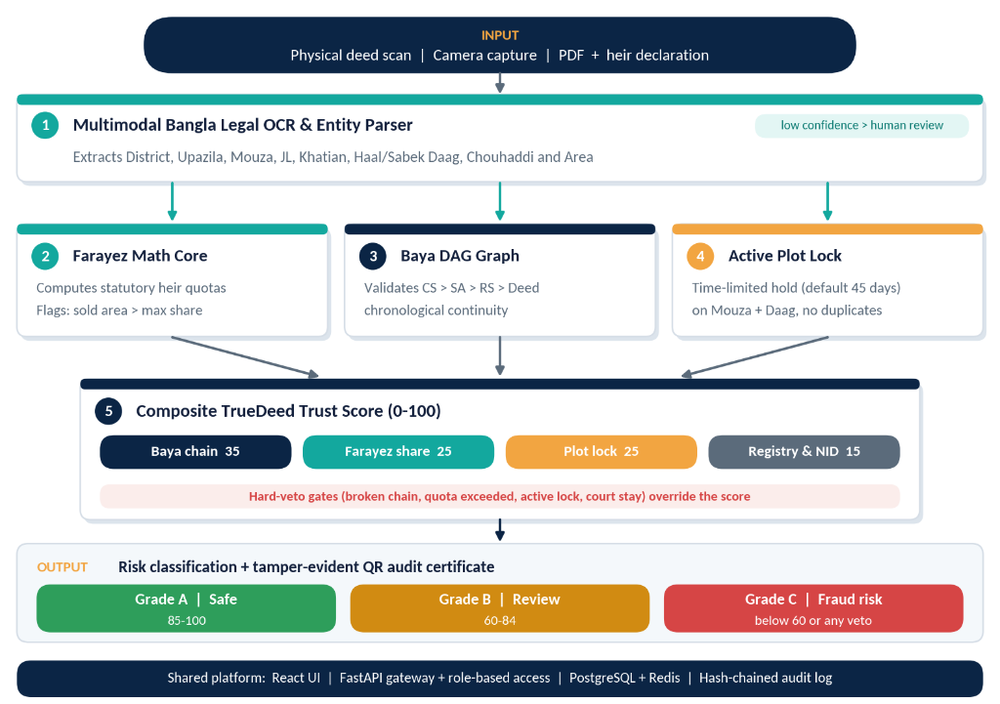

Under Section 5 of the official LandTech 2026 Rule Book, Team TrueDeed tackles Problem P3: Catch Fraud & Double-Selling: "Spot fake documents, the same land sold to more than one buyer, and records that do not match between registration and mutation."
Land disputes are the single greatest driver of social friction, generational litigation, and judicial congestion in Bangladesh. According to Law Commission of Bangladesh reports and judicial statistics from the Supreme Court, property and boundary disputes account for approximately 70% of the country's ~3.5 million pending civil litigations, immobilizing billions of takas in productive wealth.
Fraud syndicates exploit this structural disconnect through three disastrous mechanisms:
TrueDeed is an automated Algorithmic Decision Support System (ADSS) designed to bridge the void between Sub-Registry offices and AC Land offices. Rather than acting as a passive record query portal like e-Porcha, TrueDeed operates as an active pre-execution fraud intercept gate that evaluates title integrity, statutory inheritance quotas, and temporal transaction locks in under 5 seconds before transfer deeds are executed.
TrueDeed transforms physical deed scans into mathematical proofs of title authenticity via a modern 5-stage microservice architecture:

The system is engineered as an asynchronous, highly decoupled microservice pipeline designed for horizontal scalability:
| Component | Technologies Used | Architectural Responsibility |
|---|---|---|
| Frontend Portal | React 19, Tailwind CSS, TypeScript | Fast, responsive web dashboard for Sub-Registrar desks, bank vetting officers, and citizen self-service. |
| API Gateway | FastAPI / Python 3.12, Uvicorn, Celery | Asynchronous microservice orchestrator with automated request routing, auth tokens, and audit logging. |
| Bangla Legal OCR | Multimodal Gemini Flash VLM, OpenCV | Asynchronous pipeline (3–5s) extracting District, Mouza, Khatian, Daag, Chouhaddi, and acreage into JSON. |
| Farayez & DAG Engine | NetworkX, Custom Math Core | Sub-second (<500ms) graph traversal of historical Baya deeds and mathematical calculation of statutory quotas. |
| Database & Ledger | PostgreSQL 16, Redis, SHA-256 Hashes | ACID-compliant storage of Khatians, 45-day active plot locks, and an append-only cryptographic audit trail. |
TrueDeed delivers five targeted innovations resolving Problem P3 at the national administrative level:
To guarantee legal rigor and prevent mathematical score averaging from masking critical title defects, TrueDeed implements weighted scoring coupled with non-negotiable Hard Veto overrides:
| Evaluation Metric | Weightage | Algorithmic Verification Standard |
|---|---|---|
| Baya Chain Continuity | 35 Points | Continuous, unbroken DAG lineage tracing from state baseline (CS/SA/RS) to current deed. |
| Farayez Quota Compliance | 25 Points | Deeded acreage is strictly ≤ statutory inheritance entitlement calculated from baseline khatian. |
| Active Plot Lock Check | 25 Points | Zero concurrent transfer filings or active holds on target Daag within the 45-day window. |
| Registry & NID Match | 15 Points | Cross-verified consistency across Seller NID, Porcha records, and biometric registry logs. |
| HARD VETO: Chain Broken | < 30% Fatal | Missing or forged intermediate Baya deed drops total score below 30% regardless of other points. |
| HARD VETO: Civil Injunction | 0% Lock | Active temporary injunction under Order 39, Rules 1–2 of CPC 1908 immediately halts registration. |
TrueDeed is designed to integrate seamlessly into Bangladesh's national e-governance framework:
| Stakeholder Sector | Nationwide E-Governance Deployment Value |
|---|---|
| Sub-Registry Offices | Integrated directly into the deed registration software at Sub-Registry desks to verify ownership and statutory heir quotas before printing stamp papers. |
| AC Land Offices | Automates cross-checking during e-Mutation hearings, instantly catching forged Baya deeds and preventing duplicate mutation applications. |
| Mortgage Banks & NBFIs | Integrated via secure B2B API into loan origination systems to reduce collateral property title vetting from 21 days down to 5 seconds. |
| Citizens & Expatriates | Mobile-first citizen portal ("Check Before You Pay") enabling non-resident Bangladeshis and buyers to verify title validity before paying token money. |
In strict compliance with Section 6 of the LandTech 2026 Rule Book, Team TrueDeed comprises 2 DIU students and 2 specialized mentors:
| Role | Name | Affiliation / ID | Contact / Responsibility |
|---|---|---|---|
| Student 1 (Team Leader) | ISHTIAK AHMED | 0242310005101006 Department of CSE, DIU |
System Architecture, Full-Stack Engine & Presentation |
| Student 2 (Core Member) | Ashfikur Rahman Mahi | 0242310005101618 Department of CSE, DIU |
UI/UX Design, Pipeline Testing & Concept Documentation |
| Faculty Mentor | Md. Jubayar Alam Rafi | Lecturer, Department of CSE Daffodil International University |
alamrafi.cse@diu.edu.bd 01707587089 |
| Industry Support Mentor | MD Zafor Iqbal | CSE-TECH | xoy4444@gmail.com GovTech Scaling & Cloud Feasibility |